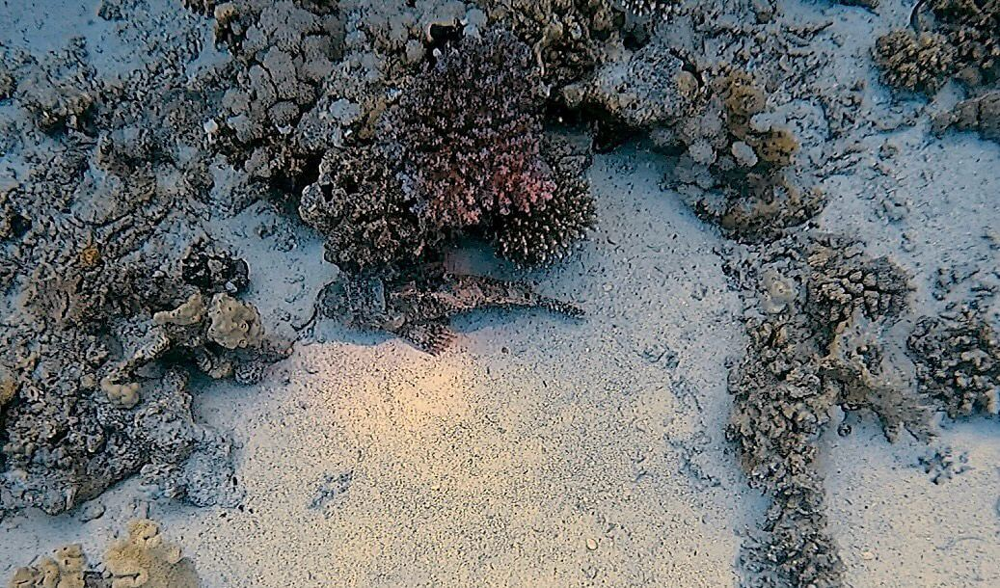

Verteidigung und Schutzmechanismen
Fische sind ständig potenziellen Fressfeinden ausgesetzt. Im Laufe der Evolution haben sie daher eine Vielzahl effektiver Strategien entwickelt, um sich zu schützen oder Angriffen zu entkommen.
Verschiedene Verteidigungsarten
- Fluchtverhalten: Schnelles Wegschwimmen schützt viele Fische vor Angreifern.
- Tarnung: Manche Fische passen sich ihrer Umgebung an und sind kaum zu erkennen.
- Stacheln und harte Körperstrukturen: Spitze Stacheln oder harte Flossen schrecken Fressfeinde ab.
- Gift: Einige Arten sind giftig, wie zum Beispiel der Kugelfisch.
- Schwärme: Leben in Gruppen erschwert es Räubern, einzelne Fische zu erbeuten.
Spannend!
Einige Fischarten sind sogar in der Lage, ihre Farbe zu verändern, um sich besser an ihre Umgebung anzupassen. Diese Fähigkeit dient sowohl der Tarnung als auch der Kommunikation.